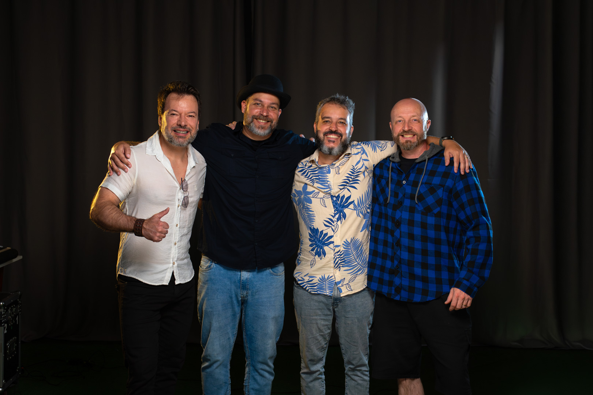
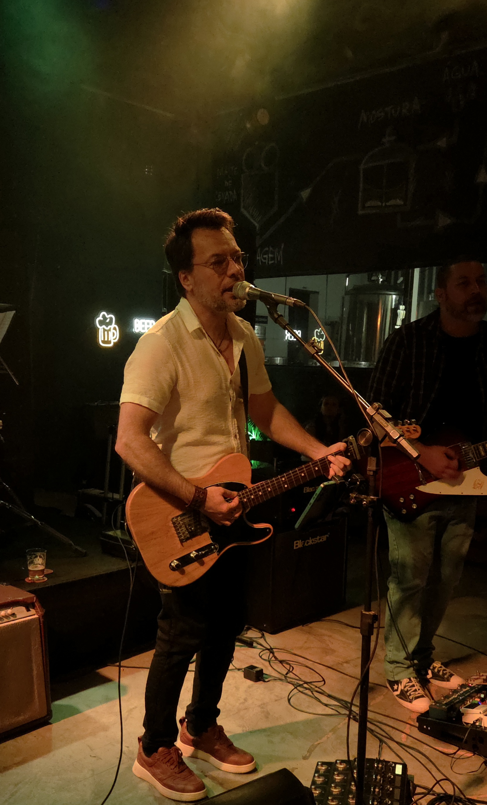
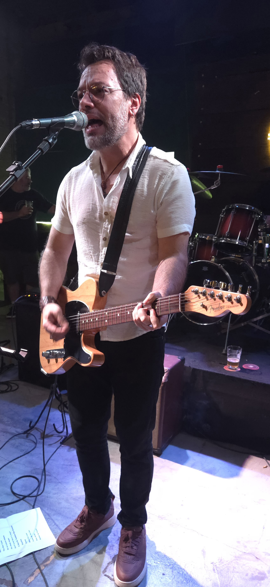
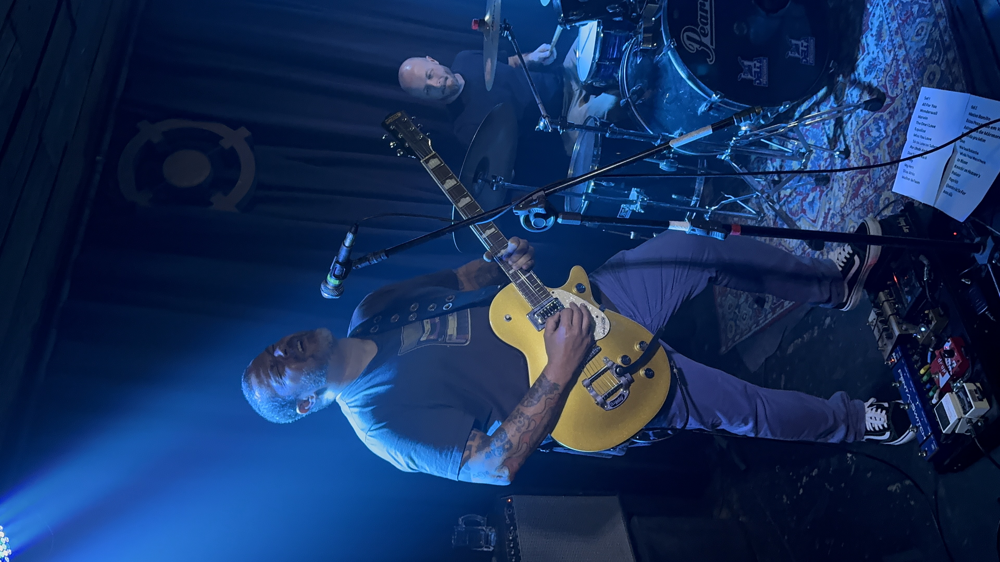

Walter Delannovoz e guitarra

ROCK DE PETRÓPOLIS DESDE A PRIMEIRA NOTA
JELLYBEAN.
Algumas músicas não precisam de apresentação.
ENCONTROS MARCADOS
Próximas datas.
Acompanhe as próximas apresentações da Jelly Bean.
Sem datas publicadas neste espaço até confirmação oficial.
O SHOW
Tem coisa que a primeira nota resolve.
Uma música puxa a outra. Alguém reconhece antes do refrão, outra pessoa acompanha, e a noite começa a tomar o próprio rumo.
A Jelly Bean entra para tocar. O resto acontece ali.
Às vezes o melhor momento da noite não pede anúncio. Só espaço.
NOITE
Quando encaixa, ninguém precisa explicar.
Às vezes é um refrão. Às vezes é só um olhar vindo lá do fundo. A gente gosta quando a noite começa a responder.

A BANDA
Quatro músicos. O resto vem das músicas.
A Jelly Bean é de Petrópolis. Walter, Paulinho, Fernando e Henrique dividem o palco e um repertório que passa por Oasis, Radiohead, Charlie Brown Jr., Pitty, CPM 22, Los Hermanos e outras que costumam chegar antes do nome.
Tem música que abre a noite. Tem música que muda tudo no meio. E tem aquela que, quando começa, todo mundo já sabe o que vem depois.
A gente prefere deixar isso acontecer sem muita explicação.
Quatro pessoas, o mesmo palco e espaço para a música fazer o resto.
Paulinho Carvalhoguitarra e backing vocals
Fernando Vasquesbaixo
Henrique Duartebateria
REGISTROS
Algumas noites deixam registro.
Essas deixaram.





Tem refrão que não fica só no palco.
CONTRATAÇÃO
Quer a Jelly Bean por aí?
Fala com a gente. A gente vê a data, o lugar e o que faz sentido.
Falar no WhatsAppPubs, eventos, festivais e casas de show.